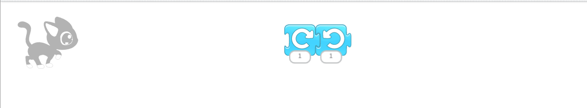
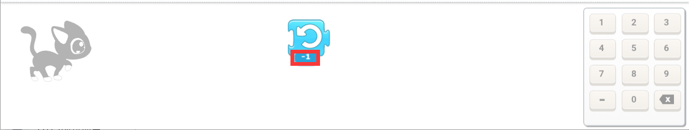
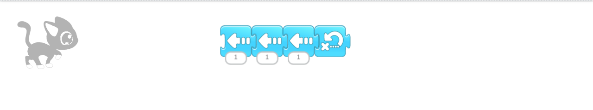

第四课
点击从左至右第二个积木，今天我们来介绍蓝色积木的后面四个。
拖出第五个积木，点一下，角色会顺时针旋转一下，旋转12下就可以转一圈。
删除第五个积木，拖出第六个积木，点击积木，角色会逆时针旋转一下，旋转12下就可以旋转一圈。
现在我们来试一下，把第五六个积木按如图组合。

角色会先顺时针转一下，再逆时针转一下。
拖出第六个积木，点一下积木，角色就会上跳一步，如果把下面的数字改成-1，角色就会下跳一步。

比如组合如图积木：

点一下角色就会先向左移三步，然后回到最开始的地方。